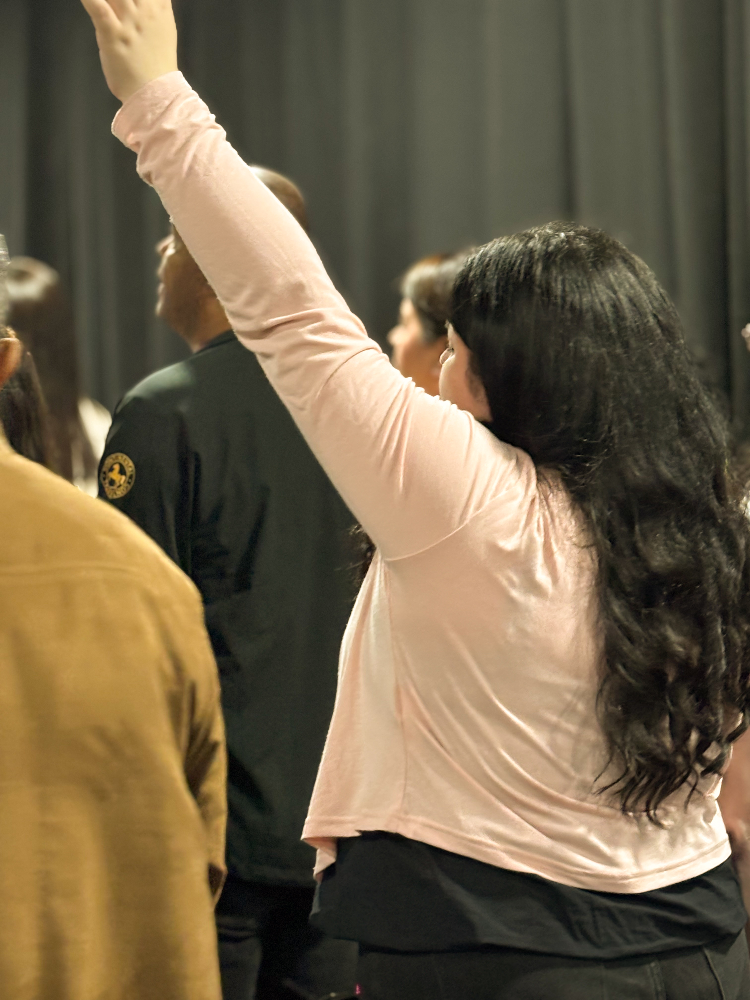

Por tanto, id, y haced discípulos a todas las naciones, bautizándolos en el nombre del Padre, y del Hijo, y del Espíritu Santo; enseñándoles que guarden todas las cosas que os he mandado; y he aquí yo estoy con vosotros todos los días, hasta el fin del mundo. Amén. Mateo 28:19-20


Por tanto, de esta manera te haré a ti, oh Israel; y porque te he de hacer esto, prepárate para venir al encuentro de tu Dios, oh Israel.
Amós 4:12
Velad, pues, porque no sabéis a qué hora ha de venir vuestro Señor.
Mateo 24:42
16 Toda la Escritura es inspirada por Dios, y útil para enseñar, para redargüir, para corregir, para instruir en justicia, 17 a fin de que el hombre de Dios sea perfecto, enteramente preparado para toda buena obra.
2 Timoteo 3:16–17
yo los llevaré a mi santo monte, y los recrearé en mi casa de oración; sus holocaustos y sus sacrificios serán aceptos sobre mi altar; porque mi casa será llamada casa de oración para todos los pueblos.
Isaías 56:7
Y perseveraban en la doctrina de los apóstoles, en la comunión unos con otros, en el partimiento del pan y en las oraciones.
Hechos 2:42
15 sino, como aquel que os llamó es santo, sed también vosotros santos en toda vuestra manera de vivir; 16 porque escrito está: Sed santos, porque yo soy santo.
1 Pedro 1:15–16
13 aguardando la esperanza bienaventurada y la manifestación gloriosa de nuestro gran Dios y Salvador Jesucristo,
Tito 2:13
Mas el que persevere hasta el fin, este será salvo.
Mateo 24:13
14 Vosotros sois la luz del mundo; una ciudad asentada sobre un monte no se puede esconder. 15 Ni se enciende una luz y se pone debajo de un almud, sino sobre el candelero, y alumbra a todos los que están en casa. 16 Así alumbre vuestra luz delante de los hombres, para que vean vuestras buenas obras, y glorifiquen a vuestro Padre que está en los cielos.
Mateo 5:14–16
7 Gocémonos y alegrémonos y démosle gloria; porque han llegado las bodas del Cordero, y su esposa se ha preparado.
Apocalipsis 19:7
SERVICIOS

independencia #1191
esquina collin
SALUDO PASTORAL
Querida familia y amigos,
Somos Rodrigo y Jeannette, pastores de Casa de Oración en Chillán, y queremos darte la bienvenida a este espacio que refleja nuestro corazón como iglesia. Aquí creemos profundamente que Dios está preparando a Su pueblo para el encuentro con Jesús, y cada reunión, cada enseñanza y cada momento de oración tiene un solo propósito: ayudarte a caminar firme, restaurado y con identidad como hijo de Dios.
Nuestra iglesia es una familia espiritual, donde todos sin importar su historia, heridas o proceso encuentran un lugar para sanar, crecer y volver a levantarse. Trabajamos juntos, de rodillas y en comunión, para fortalecer la fe, formar carácter y enseñar toda la Palabra desde Génesis hasta Apocalipsis, sabiendo que vivimos tiempos extraordinarios que requieren corazones alineados al Padre.
Si estás llegando por primera vez, queremos que sepas algo: No llegaste por casualidad. Dios te está llamando por tu nombre. Aquí encontrarás una casa donde la oración es esencial, donde la Palabra es central y donde el amor fraternal es real y práctico.
Oramos para que, al unirte a esta comunidad, puedas descubrir tu propósito, ser restaurado en tu identidad, y caminar junto a otros que también anhelan ver a Jesús reinar en sus vidas, en sus familias y en nuestra ciudad.
Con amor y esperanza, Pastores Rodrigo y Jeannette Casa de Oración , Chillán

Misión
-
1 Anunciar fielmente el evangelio de Jesucristo.
-
2 Formar discípulos que guarden y vivan todo lo que Jesús enseñó.
-
3 Acompañar a las personas en un proceso real de transformación espiritual.
-
4 Establecer una Iglesia bíblica, perseverante y dependiente de la presencia del Señor.
-
5 Cumplir la misión con la certeza de que Cristo está con nosotros todos los días, hasta el fin del mundo.
Preparar a la Iglesia para el encuentro con Jesucristo, edificada sobre toda la Palabra de Dios, perseverante en la oración, firme en el carácter cristiano y unida como familia espiritual, viviendo con una esperanza activa en la venida del Señor y reflejando a Cristo en cada área de la vida.
Vision
PREPARAR
Él es el principio, el fin y el motivo de todo lo que hacemos. Nuestra meta es caminar en fidelidad y vivir para agradarle en todo momento.
IGLESIA
No somos un edificio, sino el cuerpo vivo de Cristo; una familia espiritual llamada a reflejar Su amor y reinar con Él en la tierra.
ENCUENTRO
Buscamos una conexión eterna que ocurre hoy a través de la adoración personal y colectiva, preparándonos para verle cara a cara.
JESUS
Él es el principio, el fin y el motivo de todo lo que hacemos. Nuestra meta es caminar en fidelidad y vivir para agradarle en todo momento.


SOMOS
Una familia espiritual donde las personas importan, la cercanía es real y la fe se vive en comunidad. Creemos que todos somos valiosos, no por lo que hacemos o damos, sino por lo que somos: hijos de Dios, y por eso, hermanos.
CDOH
En los grupos Cuarto de Oración Hogar, la iglesia sale de las paredes del templo para compartir la mesa. Es un tiempo diseñado para estrechar lazos y profundizar juntos en nuestra relación con Jesús.